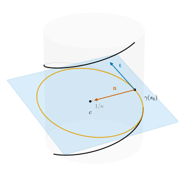
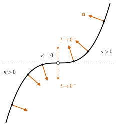

5.1 Curvature of Space Curves
Goals
- arc length로 parametrization된 space curve의 curvature \(\kappa = \abs{\gamma''(s)}\)를 정의하고, 이것이 reparametrization에 무관하며 plane curve에서는 \(\abs{\kappa_s}\)와 같음을 보일 수 있다.
- 일반 매개변수의 곡선에서 \(\kappa = \abs{d\mathbf{t}/dt}/\abs{\gamma'}\)로 curvature를 계산하고, helix의 curvature \(a/(a^2 + b^2)\)을 구할 수 있다.
- \(\kappa \gt 0\)인 점에서 principal normal vector \(\mathbf{n}\)과 osculating plane을 정의하고, \(\kappa = 0\)인 점에서는 \(\mathbf{n}\)을 정할 수 없는 이유를 설명할 수 있다.
- space curve의 osculating circle을 정의하고, osculating plane과 osculating circle이 곡선에 가장 가깝게 맞닿는 평면과 원임을 증명할 수 있다.
Prerequisites
- Definition 4.4.1 (unit tangent vector), Corollary 4.1.12 (vector-valued function of constant norm), Proposition 4.1.11 (product rule and chain rule)
- Proposition 4.3.5, Theorem 4.3.9 (existence and uniqueness of arc length parametrization), Example 4.3.10 (arc length parametrization of the helix)
- Definition 4.4.2 (signed curvature), Definition 4.5.1 (center of curvature and osculating circle), Proposition 4.5.10 (curvature and center of curvature of a space curve lying in a plane)
- 1변수 Taylor's theorem(Lemma 2.2.16), extreme value theorem(Theorem 3.6.10), 적분의 triangle inequality(Lemma 4.2.9)
Motivation
Proposition 4.5.10에서 평면에 놓인 unit-speed curve의 curvature의 크기가 \(\abs{\gamma''(s)}\)이고 center of curvature가 \(\gamma + \gamma''/\abs{\gamma''}^2\)임을 보았다. 이 두 식에는 평면도, 평면의 좌표도 나오지 않는다. 그러니 평면을 벗어나는 곡선에도 그대로 쓸 수 있을 것이다. 이 절은 이 기대를 정의로 만든다.
무엇을 잃고 무엇을 얻는지 먼저 짚어 두자. Section 4.4의 Warning 상자에서 보았듯이 공간에는 “왼쪽”이 없으므로 curvature의 부호는 잃는다. 대신 방향을 얻는다. plane curve의 가속도 \(\gamma''\)은 늘 정해진 평면 안에 있었지만, space curve의 \(\gamma''\)은 \(\mathbf{t}\)에 수직인 평면 안의 어느 방향이든 가리킬 수 있다. 그 방향이 곡선이 “지금 휘어 들어가는 쪽”이고, \(\mathbf{t}\)와 그 방향이 만드는 평면이 곡선이 “지금 놓여 있는 평면”이다.

Curvature
\(\gamma\colon I \to \R^3\)이 arc length로 parametrization되어 있다고 하자. unit tangent vector는 \(\mathbf{t}(s) = \gamma'(s)\)이고(Definition 4.4.1) \(\abs{\mathbf{t}} = 1\)이므로, Corollary 4.1.12에 의해 \(\mathbf{t}'(s) = \gamma''(s)\)은 \(\mathbf{t}(s)\)와 orthogonal하다. 곧 \(\mathbf{t}'\)은 속도의 크기가 아니라 방향이 바뀌는 빠르기만 담고 있다. 이 빠르기가 curvature이다.
Definition 5.1.1 (curvature). \(\gamma\colon I \to \R^3\)이 curve parametrized by arc length일 때
를 \(s\)에서 \(\gamma\)의 curvature(곡률)이라 한다. 일반 매개변수의 regular curve \(\gamma\colon I \to \R^3\)에서는 \(t_0 \in I\)을 하나 골라 Theorem 4.3.9의 orientation-preserving arc length parametrization \(\beta = \gamma \circ h\), \(h = s^{-1}\)을 만들고 \(\kappa(t) = \kappa^\beta(s(t))\)로 정한다.
일반 매개변수에서의 정의는 Section 4.4에서 signed curvature에 쓴 약속과 같다. \(t_0\)을 다르게 고르면 \(\beta\)는 \(\beta(\sigma + c)\)로 바뀔 뿐이고 (Theorem 4.3.9(c)), 매개변수에 상수를 더해도 대응하는 점에서 도함수가 같으므로 \(\kappa(t)\)는 \(t_0\)에 무관하다. 정의에서 \(\kappa \ge 0\)이다. 또 \(\gamma''\)이 매끄러우므로 \(\kappa\)는 연속이고, \(\gamma''(s) \neq 0\)인 곳에서는 \(\kappa = \sqrt{\inner{\gamma''}{\gamma''}}\)이 매끄럽다. \(\gamma'' = 0\)인 점에서는 \(\kappa\)가 매끄럽지 않을 수 있다(Non-example 5.1.11에서 \(\kappa\)는 \(\abs{\kappa_s}\)이다).
실제 곡선은 arc length로 parametrization되어 있지 않은 경우가 대부분이다. 다음 명제는 reparametrization 없이 curvature를 계산하는 방법을 주고, curvature가 곡선의 orientation과도 무관함을 보인다.
Proposition 5.1.2 (curvature for a general parameter and reparametrization invariance). \(\gamma\colon I \to \R^3\)이 regular curve이고 \(\mathbf{t}(t) = \gamma'(t)/\abs{\gamma'(t)}\)라 하자.
- (a) 모든 \(t \in I\)에서 다음이 성립한다.
\[ \kappa(t) = \frac{1}{\abs{\gamma'(t)}}\,\Big\lvert \frac{d\mathbf{t}}{dt}(t) \Big\rvert \tag{5.1.2} \]
- (b) \(\beta = \gamma \circ h\colon \tilde I \to \R^3\)이 \(\gamma\)의 reparametrization이면, \(h\)가 방향을 보존하든 뒤집든 모든 \(u \in \tilde I\)에서 \(\kappa^\beta(u) = \kappa(h(u))\)이다.
이 명제가 말하는 것. curvature는 unit tangent vector가 움직이는 빠르기를 곡선이 움직이는 빠르기로 나눈 것, 곧 “단위 길이당 접선 방향의 변화”다. 그리고 곡선을 어떻게 다시 parametrization하든, 거꾸로 지나가든 같은 점에서의 curvature는 같다. curvature는 trace에만 달린 양이다.
Proof idea: \(\mathbf{t}(t)\)는 arc length parametrization \(\beta\)의 속도 \(\beta'(s(t))\)이므로 chain rule을 한 번 쓰면 (a)가 나온다. (b)는 (a)의 우변이 reparametrization에서 \(\abs{h'}\)끼리 약분되는 것을 확인하면 된다.
Proof. (a) \(\beta = \gamma \circ h\)를 \(t_0\)에서 잰 orientation-preserving arc length parametrization이라 하자. \(h'(\sigma) = 1/\abs{\gamma'(h(\sigma))} \gt 0\)이므로 \(\beta'(s(t)) = h'(s(t))\,\gamma'(t) = \gamma'(t)/\abs{\gamma'(t)} = \mathbf{t}(t)\)이다 (Proposition 4.3.5(a)). 이 식의 양변을 \(t\)로 미분하면 Proposition 4.1.11(c)와 (4.2.5)에서
\[ \frac{d\mathbf{t}}{dt}(t) = \beta''(s(t))\,s'(t) = \beta''(s(t))\,\abs{\gamma'(t)} \]이다. 양변의 크기를 재면 \(\abs{d\mathbf{t}/dt} = \kappa^\beta(s(t))\,\abs{\gamma'(t)} = \kappa(t)\,\abs{\gamma'(t)}\)이다.
(b) \(\beta = \gamma \circ h\)의 unit tangent vector는 \(\mathbf{t}^\beta(u) = \varepsilon\,\mathbf{t}(h(u))\)이다. 여기서 \(\varepsilon = h'/\abs{h'}\)은 \(h\)가 방향을 보존하면 \(1\), 뒤집으면 \(-1\)인 상수다 (Proposition 4.3.5(d)). chain rule에서 \(d\mathbf{t}^\beta/du = \varepsilon\,h'(u)\,(d\mathbf{t}/dt)(h(u))\)이고 \(\abs{\beta'(u)} = \abs{h'(u)}\,\abs{\gamma'(h(u))}\)이다. (a)를 \(\beta\)에 쓰면
\[ \kappa^\beta(u) = \frac{\abs{h'(u)}\,\abs{(d\mathbf{t}/dt)(h(u))}}{\abs{h'(u)}\,\abs{\gamma'(h(u))}} = \kappa(h(u)) \]이다. 마지막 등호는 (a)를 \(\gamma\)에 쓴 것이다.
Example 5.1.3 (line and circle, running example). (a) \(\abs{v} = 1\)인 직선 \(\gamma(s) = p + sv\)는 \(\gamma'' = 0\)이므로 \(\kappa \equiv 0\)이다.
(b) 반지름 \(r\)인 원의 arc length parametrization \(\gamma(s) = (r\cos(s/r),\ r\sin(s/r),\ 0)\)(Example 4.3.8(b))에서
\[ \gamma''(s) = -\frac{1}{r}\big(\cos(s/r),\ \sin(s/r),\ 0\big), \qquad \kappa(s) = \frac1r \]이다. Proposition 5.1.2(b)에 의해 standard parametrization \((r\cos t, r\sin t, 0)\)도, 시계 방향으로 도는 parametrization도 curvature가 \(1/r\)이다. 이것이 running example의 원의 curvature이다. Example 4.4.3에서는 방향에 따라 \(\pm 1/r\)이었던 것이 여기서는 부호 없이 \(1/r\)이 된다.
Verification: verify/v-5-1-curvature.py
Non-example 5.1.4 (differentiating twice with respect to an arbitrary parameter). helix \(\gamma(t) = (a\cos t, a\sin t, bt)\)(Example 4.1.4)에서 \(\gamma''(t) = (-a\cos t, -a\sin t, 0)\)이므로 \(\abs{\gamma''(t)} = a\)이다. 그러나 curvature는 \(a/(a^2 + b^2)\)이다(Example 5.1.7). \(a = 1\), \(b = 0.3\)이면 \(1\)과 약 \(0.917\)이다. \(\abs{\gamma''(t)}\)에는 곡선이 휘는 정도와 함께 속력이 변하는 정도, 매개변수가 흐르는 빠르기가 섞여 있다. Equation (5.1.1)은 arc length parametrization에서만 curvature를 준다. 일반 매개변수에서는 (5.1.2)를 쓰거나, Section 5.3의 cross product 공식을 쓴다.
plane curve에서 이 curvature는 signed curvature의 크기다. 그러니 \(\kappa\)는 Chapter 4의 \(\kappa_s\)에서 부호만 떼어 낸 것이고, 새 이름에 걸맞게 Chapter 4와 모순이 없다.
Proposition 5.1.5 (curvature of a plane curve is the absolute value of the signed curvature). regular curve \(\gamma\)의 trace가 평면 \(\Pi = \{p_0 + xa_1 + ya_2\}\)(\((a_1, a_2)\)는 orthonormal)에 들어 있고, \(\kappa_s\)가 \((a_1, a_2)\)에 대한 \(\gamma\)의 signed curvature이면 \(\kappa = \abs{\kappa_s}\)이다. 특히 \(xy\)평면의 곡선 \((x(t), y(t), 0)\)의 curvature는 Definition 4.4.2의 \(\abs{\kappa_s}\)이다.
Proof. 두 양 모두 orientation-preserving arc length parametrization으로 정의되므로 \(\gamma\)가 단위속력이라 해도 된다. 그러면 Proposition 4.5.10(a)에서 \(\abs{\kappa_s(s)} = \abs{\gamma''(s)} = \kappa(s)\)이다. 둘째 주장은 \(p_0 = 0\), \((a_1, a_2) = (e_1, e_2)\)인 경우다.
Proposition 5.1.6 (curves with curvature \(0\) are straight lines). \(\gamma\colon I \to \R^3\)이 regular curve이면, \(I\)의 모든 점에서 \(\kappa = 0\)일 필요충분조건은 \(\gamma\)의 trace가 한 직선에 들어 있는 것이다.
Proof. Proposition 5.1.2(b)에 의해 \(\gamma\)가 단위속력이라 해도 된다(reparametrization은 trace를 바꾸지 않는다. Proposition 4.3.5(b)). \(\kappa \equiv 0\)이면 \(\gamma'' \equiv 0\)이므로 \(\gamma'\)의 각 성분은 도함수가 \(0\)이고, mean value theorem에 의해 \(\gamma' \equiv v\)(상수, \(\abs{v} = 1\))이다. \(s_0 \in I\)을 고르면 \(\gamma(s) = \gamma(s_0) + (s - s_0)v\)이므로 trace는 직선 위에 있다. 거꾸로 trace가 직선 \(\{p + \lambda v\}\)(\(\abs{v} = 1\)) 위에 있으면 \(\gamma(s) = p + \lambda(s)v\)로 쓸 수 있고(\(\lambda(s) = \inner{\gamma(s) - p}{v}\)는 매끄럽다), \(\abs{\gamma'} = \abs{\lambda'} = 1\)이며 \(\lambda'\)은 연속이므로 \(\lambda' \equiv 1\) 또는 \(\lambda' \equiv -1\)이다(intermediate value theorem, Corollary 3.7.6). 따라서 \(\gamma'' = \lambda''v = 0\)이다.
Example 5.1.7 (curvature of the helix, running example). helix \(\gamma(t) = (a\cos t, a\sin t, bt)\)(\(a \gt 0\), \(b \neq 0\))의 arc length parametrization은 (4.3.2)의 \(\beta(s) = \big(a\cos(s/c),\ a\sin(s/c),\ bs/c\big)\), \(c = \sqrt{a^2 + b^2}\)이다. 한 번 미분하면 \(\beta'(s) = \big(-\tfrac{a}{c}\sin\tfrac{s}{c},\ \tfrac{a}{c}\cos\tfrac{s}{c},\ \tfrac{b}{c}\big)\)이고, 한 번 더 미분하면(\(\tfrac{b}{c}\)는 상수이므로 사라진다)
이다. 이것이 running example의 helix의 curvature이다. (5.1.2)로도 같은 값을 얻는다: \(\mathbf{t}(t) = (-a\sin t, a\cos t, b)/c\)이므로 \(d\mathbf{t}/dt = (-a\cos t, -a\sin t, 0)/c\)이고 \(\kappa = (a/c)/c = a/c^2\)이다. 몇 가지를 읽어 내자.
- curvature는 상수다. helix는 어느 점에서나 똑같이 휘어 있다.
- \(b \to 0\)이면 \(\kappa \to 1/a\)이다. 납작하게 누르면 반지름 \(a\)인 원이 된다. \(\abs{b} \to \infty\)이면 \(\kappa \to 0\)이다. 길게 늘이면 거의 곧은 선이 된다.
- \(\kappa\)는 \(b\)의 부호에 무관하다. 오른손 helix(\(b \gt 0\))과 왼손 helix(\(b \lt 0\))은 curvature로 구별되지 않는다.
- 반지름 \(1/\kappa = (a^2 + b^2)/a = a + b^2/a\)인 원은 helix와 curvature가 같다. 예를 들어 \(a = b = 1\)인 helix와 반지름 \(2\)인 원은 모두 \(\kappa = 1/2\)이다. curvature가 같다고 모양이 같지는 않다. helix가 원보다 더 가지고 있는 정보는 Section 5.2에서 잰다.
Verification: verify/v-5-1-curvature.py (dgsym.curvature_torsion과도 비교한다)
The Principal Normal Vector and the Osculating Plane
curvature는 \(\mathbf{t}'\)의 크기다. 이제 방향을 보자. \(\kappa(s) \gt 0\)이면 \(\mathbf{t}'(s)\)을 그 크기로 나눈 단위벡터를 만들 수 있다.
Definition 5.1.8 (principal normal vector). \(\gamma\colon I \to \R^3\)이 arc length로 parametrization되어 있고 \(\kappa(s) \gt 0\)이라 하자. 단위벡터
\[ \mathbf{n}(s) = \frac{\mathbf{t}'(s)}{\kappa(s)} = \frac{\gamma''(s)}{\abs{\gamma''(s)}} \]를 \(s\)에서 \(\gamma\)의 principal normal vector(주법선벡터)라 한다. 일반 매개변수의 regular curve에서는 Definition 5.1.1처럼 orientation-preserving arc length parametrization으로 정한다: \(\mathbf{n}(t) = \mathbf{n}^\beta(s(t))\).
정의에서 곧바로
이다(orthogonality는 Corollary 4.1.12). 벡터 \(\gamma''(s) = \kappa(s)\mathbf{n}(s)\)는 \(\kappa = 0\)인 점에서도 뜻이 있다. 이것을 \(s\)에서의 curvature vector(곡률벡터)라 한다. curvature vector의 크기가 curvature이고, \(\kappa \gt 0\)이면 방향이 principal normal이다.
\(\mathbf{n}\)은 곡선의 orientation을 뒤집어도 바뀌지 않는다. \(\bar\gamma(s) = \gamma(-s)\)이면 \(\bar\gamma''(s) = \gamma''(-s)\)이기 때문이다(Exercise 4.3.3). \(\mathbf{t}\)는 부호가 바뀐다. 일반 매개변수에서 \(\kappa(t) \gt 0\)이면, Proposition 5.1.2의 증명에서 \(d\mathbf{t}/dt = \abs{\gamma'(t)}\,\kappa(t)\,\mathbf{n}(t)\)이므로 \(\mathbf{n}(t) = (d\mathbf{t}/dt)/\abs{d\mathbf{t}/dt}\)로 계산할 수 있다.
\(\mathbf{t}(s)\)와 \(\mathbf{n}(s)\)는 서로 orthogonal한 두 단위벡터이므로 \(\gamma(s)\)를 지나는 평면 하나를 정한다.
Definition 5.1.9 (osculating plane). \(\kappa(s) \gt 0\)일 때 \(\gamma(s)\)를 지나고 \(\mathbf{t}(s)\), \(\mathbf{n}(s)\)의 span을 방향으로 하는 평면
\[ \{\gamma(s) + x\,\mathbf{t}(s) + y\,\mathbf{n}(s) : x, y \in \R\} \]을 \(s\)에서 \(\gamma\)의 osculating plane(접촉평면)이라 한다.
osculating plane은 접선(Definition 4.2.4)을 포함하는 평면들 가운데 하나다. 그 가운데 왜 이 평면이 특별한지는 Theorem 5.1.14에서 본다. \(\mathbf{t}\)의 부호가 바뀌어도 방향을 정하는 span은 같으므로 osculating plane도 곡선의 orientation에 무관하다.
Example 5.1.10 (principal normal of the circle and the helix, running example). (a) Example 5.1.3(b)의 원에서 \(\mathbf{n}(s) = -(\cos(s/r), \sin(s/r), 0) = -\gamma(s)/r\)이다. principal normal은 원의 중심을 향하고, osculating plane은 모든 점에서 \(xy\)평면이다.
(b) helix의 (5.1.3)에서
\[ \mathbf{n}(s) = -\Big(\cos\frac{s}{c},\ \sin\frac{s}{c},\ 0\Big) \]이다. \(\mathbf{n}\)은 수평이고 cylinder의 축 쪽을 향한다. 실제로 \(\beta(s) + a\,\mathbf{n}(s) = (0, 0, bs/c)\)이므로, \(\beta(s)\)를 지나고 방향이 \(\mathbf{n}(s)\)인 직선은 \(z\)축과 수직으로 만난다 (Figure 5.1.1). osculating plane은 이 수평 방향과 \(\mathbf{t}\)를 포함하는 평면이므로 수평면에서 기울어져 있고, \(s\)가 변하면 축을 따라 돌면서 올라간다.
Verification: verify/v-5-1-curvature.py
Non-example 5.1.11 (the principal normal is undefined where \(\kappa = 0\)). \(xy\)평면의 곡선 \(\gamma(t) = (t, t^3, 0)\)을 보자. Non-example 4.5.3(a)에서 signed curvature는 \(\kappa_s = 6t/(1 + 9t^4)^{3/2}\)이고, Proposition 5.1.5에서 \(\kappa = \abs{\kappa_s}\)이다. 따라서 \(t = 0\)에서만 \(\kappa = 0\)이다. \(t \neq 0\)이면 \(\gamma''\)을 arc length로 계산한 것이 \(\kappa_s\mathbf{n}_s\)이므로 \(\mathbf{n} = (\kappa_s/\abs{\kappa_s})\,\mathbf{n}_s\), 곧
\[ \mathbf{n}(t) = \frac{t}{\abs{t}}\cdot\frac{(-3t^2,\ 1,\ 0)}{\sqrt{1 + 9t^4}} \qquad (t \neq 0) \]이다. \(t \to 0^+\)이면 \(\mathbf{n} \to (0, 1, 0)\), \(t \to 0^-\)이면 \(\mathbf{n} \to (0, -1, 0)\)이므로 \(\mathbf{n}(0)\)을 어떻게 정해도 \(\mathbf{n}\)은 \(0\)에서 연속이 아니다(Figure 5.1.2). 곡선이 휘어 들어가는 쪽이 inflection point에서 반대로 바뀌기 때문이다. 이 곡선은 평면에 있으므로 osculating plane은 \(t \neq 0\)에서 모두 \(xy\)평면이고 \(t = 0\)에서도 자연스럽게 정할 수 있지만, space curve에서는 \(\kappa = 0\)인 점의 양쪽에서 osculating plane이 서로 다른 평면으로 다가갈 수도 있다(Section 5.2). 그래서 앞으로 principal normal이나 osculating plane을 쓸 때는 늘 \(\kappa \gt 0\)을 가정한다.

0이 표시되어 있다.">The Osculating Circle
plane curve에서는 center of curvature \(\gamma + \mathbf{n}_s/\kappa_s\)과 osculating circle을 Definition 4.5.1로 정했다. space curve에서는 \(\mathbf{n}_s/\kappa_s\) 대신 \(\mathbf{n}/\kappa\)를 쓰고, 원이 놓일 평면으로 osculating plane을 쓴다.
Definition 5.1.12 (center of curvature and osculating circle of a space curve). \(\gamma\colon I \to \R^3\)이 arc length로 parametrization되어 있고 \(\kappa(s_0) \gt 0\)이라 하자.
를 \(s_0\)에서 \(\gamma\)의 center of curvature(곡률중심), \(1/\kappa(s_0)\)을 radius of curvature(곡률반지름)이라 한다. \(s_0\)에서의 osculating plane 안에서 중심이 \(c(s_0)\)이고 반지름이 \(1/\kappa(s_0)\)인 원을 \(s_0\)에서 \(\gamma\)의 osculating circle(접촉원)이라 한다. 일반 매개변수의 regular curve에서는 orientation-preserving arc length parametrization으로 정한다.
\(c(s_0) - \gamma(s_0) = \mathbf{n}(s_0)/\kappa(s_0)\)는 osculating plane 안의 벡터이므로 중심은 osculating plane 위에 있고, osculating circle은 \(\gamma(s_0)\)를 지나며 거기서 \(\mathbf{n}(s_0)\)에 수직, 곧 \(\mathbf{t}(s_0)\) 방향으로 곡선과 접한다. Equation (5.1.5)의 둘째 표현에는 \(\gamma''\)만 나오므로 center of curvature와 osculating circle은 곡선의 orientation에 무관하다. center of curvature \(c(s_0)\)은 늘 인자와 함께 쓰고, helix의 상수 \(c = \sqrt{a^2 + b^2}\)((4.3.2))과는 인자가 있는지로 구분한다. 이 정의가 Chapter 4의 정의와 같은 이름을 가질 자격이 있음을 먼저 확인하자.
Proposition 5.1.13 (for a plane curve, these agree with the center of curvature and osculating circle of Section 4.5). arc length로 parametrization된 \(\gamma\)의 trace가 평면 \(\Pi = \{p_0 + xa_1 + ya_2\}\)(\((a_1, a_2)\)는 orthonormal)에 들어 있고 \(\kappa(s_0) \gt 0\)이라 하자. 그러면 \(s_0\)에서의 osculating plane은 \(\Pi\)이고, Definition 5.1.12의 center of curvature, radius of curvature, osculating circle은 좌표 곡선 \(\hat\gamma = (x, y)\)에 Definition 4.5.1을 써서 얻은 것을 \(\Pi\)에 옮긴 것과 같다.
Proof. (4.5.6)처럼 \(\gamma = p_0 + xa_1 + ya_2\)로 쓰면 \(\mathbf{t} = x'a_1 + y'a_2\), \(\mathbf{n} = (x''a_1 + y''a_2)/\kappa\)는 \(a_1, a_2\)의 span에 있다. \(\mathbf{t}(s_0)\), \(\mathbf{n}(s_0)\)는 linearly independent이므로 이 span의 basis이고, 따라서 osculating plane은 \(\gamma(s_0) \in \Pi\)를 지나고 방향이 \(\Pi\)와 같은 평면, 곧 \(\Pi\)이다. Proposition 4.5.10에서 \(\hat\gamma\)의 radius of curvature는 \(1/\abs{\kappa_s} = 1/\abs{\gamma''} = 1/\kappa\)이고, center of curvature에 대응하는 \(\Pi\)의 점은 \(\gamma + \gamma''/\abs{\gamma''}^2\)이다. 이것은 (5.1.5)와 같다. 두 정의의 osculating circle은 모두 \(\Pi\) 안에서 중심과 반지름이 같은 원이므로 같다.
osculating plane과 osculating circle이 “가장 잘 맞는” 평면과 원이라는 것을 정확히 하자. 기준은 Corollary 4.5.6과 같다. 곡선과의 거리가 \(\abs{s - s_0}\)의 몇 제곱으로 작아지는지를 본다. osculating circle에는 parametrization 하나를 붙여 둔다. \(\kappa_0 = \kappa(s_0)\), \(\mathbf{t}_0 = \mathbf{t}(s_0)\), \(\mathbf{n}_0 = \mathbf{n}(s_0)\), \(c_0 = c(s_0)\)로 쓰고
로 두자. \(\sigma(s) - c_0\)은 orthonormal인 \(\mathbf{n}_0, \mathbf{t}_0\)의 linear combination이고 크기가 \(1/\kappa_0\)이므로 \(\sigma\)는 osculating circle을 한 바퀴 도는 parametrization이다. 직접 미분하면
\[ \begin{aligned} \sigma'(s) &= \sin\big(\kappa_0(s - s_0)\big)\,\mathbf{n}_0 + \cos\big(\kappa_0(s - s_0)\big)\,\mathbf{t}_0,\\ \sigma''(s) &= \kappa_0\Big(\cos\big(\kappa_0(s - s_0)\big)\,\mathbf{n}_0 - \sin\big(\kappa_0(s - s_0)\big)\,\mathbf{t}_0\Big) \end{aligned} \]이므로 \(\abs{\sigma'} = 1\)이고, \(\sigma(s_0) = c_0 - \mathbf{n}_0/\kappa_0 = \gamma(s_0)\), \(\sigma'(s_0) = \mathbf{t}_0\), \(\sigma''(s_0) = \kappa_0\mathbf{n}_0 = \gamma''(s_0)\)이다.
Theorem 5.1.14 (the osculating plane and osculating circle fit the curve most closely). \(\gamma\colon I \to \R^3\)이 arc length로 parametrization되어 있고 \(\kappa(s_0) \gt 0\)이며, \([s_0 - \delta, s_0 + \delta] \subseteq I\)이라 하자.
- (a) \(P\)가 \(s_0\)에서의 접선을 포함하는 평면이고 \(\nu\)가 그 unit normal vector라 하자. \(d(s) = \inner{\gamma(s) - \gamma(s_0)}{\nu}\)(점 \(\gamma(s)\)에서 \(P\)까지의 부호 있는 거리)에 대하여, \(P\)가 osculating plane이면 \(M \ge 0\)이 있어 \(\abs{s - s_0} \le \delta\)일 때 \(\abs{d(s)} \le M\abs{s - s_0}^3\)이다. \(P\)가 osculating plane이 아니면 \[ \lim_{s \to s_0} \frac{d(s)}{(s - s_0)^2} = \frac{\kappa(s_0)}{2}\inner{\mathbf{n}(s_0)}{\nu} \neq 0 \] 이다.
- (b) (5.1.6)의 \(\sigma\)에 대하여 \(M \ge 0\)이 있어 \(\abs{s - s_0} \le \delta\)일 때 \(\abs{\gamma(s) - \sigma(s)} \le M\abs{s - s_0}^3\)이다. 특히 \(\gamma(s)\)에서 osculating circle까지의 거리도 \(M\abs{s - s_0}^3\) 이하다.
이 정리가 말하는 것. 접선을 포함하는 평면 가운데 곡선이 \(3\)차로만 벗어나는 것은 osculating plane뿐이고, 다른 평면에서는 \(2\)차로 벗어난다. 또 osculating circle은 곡선과 위치, 속도, 가속도가 모두 같은 원이어서 곡선에서 \(3\)차로만 벗어난다. \(2\)차까지의 정보, 곧 곡선이 휘는 방향과 정도는 osculating plane과 osculating circle에 모두 담겨 있다.
Proof idea: Taylor's theorem을 \(2\)차까지 쓴다. \(d(s_0) = d'(s_0) = 0\)이고 \(d''(s_0) = \kappa_0\inner{\mathbf{n}_0}{\nu}\)이므로, 이 값이 \(0\)인지가 osculating plane인지와 같다. (b)는 \(\gamma - \sigma\)의 \(0\), \(1\), \(2\)계 도함수가 \(s_0\)에서 모두 \(0\)이라는 데서 나온다.
Proof. \(J = [s_0 - \delta, s_0 + \delta]\)는 compact이므로 연속함수 \(\abs{\gamma'''}\)은 \(J\)에서 최댓값 \(M_3\)을 가진다(Theorem 3.6.10).
(a) \(\nu \perp \mathbf{t}_0\)이다(\(P\)가 접선을 포함한다). \(d\)를 미분하면 \(d' = \inner{\mathbf{t}}{\nu}\), \(d'' = \inner{\gamma''}{\nu}\), \(d''' = \inner{\gamma'''}{\nu}\)이므로 \(d(s_0) = 0\), \(d'(s_0) = 0\), \(d''(s_0) = \kappa_0\inner{\mathbf{n}_0}{\nu}\)이고, Cauchy–Schwarz inequality에서 \(J\) 위에서 \(\abs{d'''} \le M_3\)이다. \(g(h) = d(s_0 + h)\)에 Lemma 2.2.16을 \(k = 2\)로 쓰면
\[ \begin{aligned} d(s_0 + h) &= \frac{d''(s_0)}{2}h^2 + R(h),\\ R(h) &= \frac12\int_0^h (h - u)^2\,d'''(s_0 + u)\,du, \qquad \abs{R(h)} \le \frac{M_3}{6}\abs{h}^3 \end{aligned} \]이다(\(\abs{h} \le \delta\)). \(P\)가 osculating plane이면 \(\nu\)는 \(\mathbf{n}_0\)에도 수직이므로 \(d''(s_0) = 0\)이고 \(M = M_3/6\)으로 두면 된다. \(P\)가 osculating plane이 아니면 \(\inner{\mathbf{n}_0}{\nu} \neq 0\)이다. 만약 \(\inner{\mathbf{n}_0}{\nu} = 0\)이면 \(\nu\)는 \(\mathbf{t}_0\)와 \(\mathbf{n}_0\)에 모두 수직이므로, \(P = \{x : \inner{x - \gamma(s_0)}{\nu} = 0\}\)은 \(\gamma(s_0)\)를 지나고 \(\mathbf{t}_0, \mathbf{n}_0\)을 포함하는 평면, 곧 osculating plane이 되기 때문이다. 그러면 \(d(s_0 + h)/h^2 = d''(s_0)/2 + R(h)/h^2\)이고 \(\abs{R(h)/h^2} \le M_3\abs{h}/6 \to 0\)이다.
(b) \(e(s) = \gamma(s) - \sigma(s)\)로 두면 위의 계산에서 \(e(s_0) = e'(s_0) = e''(s_0) = 0\)이다. \(\sigma'''\)은 크기가 \(\kappa_0^2\)이므로 \(J\) 위에서 \(\abs{e'''} \le M_3 + \kappa_0^2\)이다. \(e\)의 각 성분에 Lemma 2.2.16(\(k = 2\))을 쓰면 \(e(s_0 + h) = \frac12\int_0^h (h - u)^2 e'''(s_0 + u)\,du\)이고, Lemma 4.2.9에서 \(\abs{e(s_0 + h)} \le \frac12\big\lvert\int_0^h (h - u)^2\abs{e'''(s_0 + u)}\,du\big\rvert \le (M_3 + \kappa_0^2)\abs{h}^3/6\)이다. 마지막 주장은 \(\sigma(s)\)가 osculating circle 위의 점이므로 \(\gamma(s)\)에서 osculating circle까지의 거리가 \(\abs{\gamma(s) - \sigma(s)}\) 이하라는 데서 나온다.
osculating circle이 \(2\)차까지 맞는 유일한 원이라는 것, 곧 Theorem 4.5.5(b)의 공간판은 Exercise 5.1.7에서 확인한다. (a)의 \(\nu\)는 \(\mathbf{t}_0\)과 \(\mathbf{n}_0\)에 모두 수직인 단위벡터, 곧 \(\pm\mathbf{t}_0 \times \mathbf{n}_0\)이다. 이 벡터가 Section 5.2의 주인공이다.
Summary
- curve parametrized by arc length의 curvature는 \(\kappa = \abs{\mathbf{t}'} = \abs{\gamma''} \ge 0\)이다. 일반 매개변수에서는 \(\kappa = \abs{d\mathbf{t}/dt}/\abs{\gamma'}\)이고, curvature는 reparametrization과 곡선의 orientation에 무관하다(Proposition 5.1.2).
- plane curve에서는 \(\kappa = \abs{\kappa_s}\)이고(Proposition 5.1.5), \(\kappa \equiv 0\)이면 직선이다(Proposition 5.1.6). 원은 \(\kappa = 1/r\), helix는 \(\kappa = a/(a^2 + b^2)\)이다.
- \(\kappa \gt 0\)이면 principal normal \(\mathbf{n} = \gamma''/\abs{\gamma''}\)과 \(\mathbf{t}' = \kappa\mathbf{n}\)이 성립하고, osculating plane의 방향은 \(\mathbf{t}, \mathbf{n}\)의 span이다. \(\kappa = 0\)인 점에서는 \(\mathbf{n}\)이 연속으로 정해지지 않을 수 있다.
- center of curvature는 \(\gamma + \mathbf{n}/\kappa\), osculating circle은 osculating plane 안의 반지름 \(1/\kappa\)인 원이다. plane curve에서는 Chapter 4의 정의와 같다(Proposition 5.1.13).
- osculating plane과 osculating circle은 곡선에서 \(3\)차로만 벗어나고, 접선을 포함하는 다른 평면은 \(2\)차로 벗어난다(Theorem 5.1.14).
다음 절에서는 curvature가 같은 원과 helix를 구별하는 양을 찾는다. osculating plane의 unit normal vector인 binormal vector \(\mathbf{b} = \mathbf{t} \times \mathbf{n}\)을 도입하고, 이 벡터가 도는 빠르기, 곧 곡선이 osculating plane을 벗어나는 빠르기를 torsion으로 정의한다.
Exercises
Exercise 5.1.1 ★ 곡선 \(\gamma(t) = (\cosh t, \sinh t, t)\)의 unit tangent vector와 curvature를 (5.1.2)로 구하고, curvature가 가장 큰 점을 구하여라. (torsion은 Section 5.3에서 구한다.)
Solution
\(\gamma' = (\sinh t, \cosh t, 1)\)이고 \(\abs{\gamma'}^2 = \sinh^2 t + \cosh^2 t + 1 = 2\cosh^2 t\)이므로(\(\cosh^2 - \sinh^2 = 1\)) \(\abs{\gamma'} = \sqrt2\cosh t\)이다. 따라서 \(\mathbf{t} = (\tanh t,\ 1,\ \operatorname{sech} t)/\sqrt2\)이다. 미분하면 \(d\mathbf{t}/dt = (\operatorname{sech}^2 t,\ 0,\ -\operatorname{sech} t\tanh t)/\sqrt2\)이고
\[ \Big\lvert\frac{d\mathbf{t}}{dt}\Big\rvert = \frac{\operatorname{sech} t}{\sqrt2}\sqrt{\operatorname{sech}^2 t + \tanh^2 t} = \frac{\operatorname{sech} t}{\sqrt2} \]이다(\(\operatorname{sech}^2 + \tanh^2 = 1\)). 따라서 \(\kappa = \dfrac{\operatorname{sech} t/\sqrt2}{\sqrt2\cosh t} = \dfrac{1}{2\cosh^2 t}\)이다. \(\cosh t \ge 1\)이고 등호는 \(t = 0\)에서만 성립하므로 curvature는 \(t = 0\), 곧 점 \((1, 0, 0)\)에서 최댓값 \(1/2\)을 가진다.
Verification: verify/v-5-1-curvature.py
Exercise 5.1.2 ★ regular curve에 대한 다음 주장이 참인지 거짓인지 판별하고 이유를 대어라. (a) 곡선의 orientation을 뒤집어도 curvature는 변하지 않는다. (b) 곡선의 orientation을 뒤집으면 principal normal vector의 부호가 바뀐다. (c) 모든 \(t\)에서 \(\gamma''(t) = 0\)이면 trace는 직선에 들어 있다. (d) 모든 점에서 \(\kappa = 0\)이면 어떤 parametrization에서나 \(\gamma''(t) = 0\)이다.
Solution
(a) 참. Proposition 5.1.2(b).
(b) 거짓. unit-speed curve의 방향을 뒤집으면 \(\bar\gamma''(s) = \gamma''(-s)\)이므로 curvature vector와 principal normal이 그대로다(Definition 5.1.8 뒤의 설명).
(c) 참. \(\gamma'\)이 상수 \(v\)이고, regular이므로 \(v \neq 0\)이며 \(\gamma(t) = \gamma(t_0) + (t - t_0)v\)이다(mean value theorem).
(d) 거짓. \(\gamma(t) = (e^t, 0, 0)\)은 regular이고 trace가 \(x\)축에 들어 있으므로 \(\kappa \equiv 0\)이지만(Proposition 5.1.6), \(\gamma''(t) = (e^t, 0, 0) \neq 0\)이다. 실제로 \(\mathbf{t} \equiv e_1\)이므로 \(d\mathbf{t}/dt = 0\)이다. \(\gamma''\)은 속력이 변하는 몫을 담고 있을 뿐이다.
Verification: verify/v-5-1-curvature.py
Exercise 5.1.3 ★ \(\gamma\)가 arc length로 parametrization되어 있고 trace가 sphere \(S^2(r) = \{p : \abs{p} = r\}\)에 들어 있으면 모든 점에서 \(\kappa \ge 1/r\)임을 보여라. 등호가 성립할 필요충분조건이 그 점의 center of curvature가 구의 중심 \(O\)인 것임을 보이고, circle of latitude(Example 4.5.12)로 확인하여라.
Solution
Exercise 4.5.7의 논증을 그대로 쓴다. 그 논증은 곡선이 평면에 있다는 가정을 쓰지 않는다. \(\abs{\gamma}^2 = r^2\)을 미분하면 \(\inner{\gamma}{\gamma'} = 0\)이고(Corollary 4.1.12), 다시 미분하면 \(\inner{\gamma'}{\gamma'} + \inner{\gamma}{\gamma''} = 0\), 곧 \(\inner{\gamma}{\gamma''} = -1\)이다. Cauchy–Schwarz inequality에서 \(1 = \abs{\inner{\gamma}{\gamma''}} \le \abs{\gamma}\,\abs{\gamma''} = r\kappa\)이므로 \(\kappa \ge 1/r\)이다.
등호이면 Cauchy–Schwarz inequality의 등호 조건에서 \(\gamma''\)은 \(\gamma\)의 스칼라배이고, \(\inner{\gamma}{\gamma''} = -1\)과 \(\abs{\gamma''} = 1/r\)에서 \(\gamma'' = -\gamma/r^2\)이다. 이때 \(\kappa \gt 0\)이고 center of curvature는 \(\gamma + \gamma''/\abs{\gamma''}^2 = \gamma - \gamma = O\)이다. 거꾸로 \(\kappa \gt 0\)이고 center of curvature가 \(O\)이면 \(\gamma''/\abs{\gamma''}^2 = -\gamma\)이므로 \(\kappa = 1/\abs{\gamma} = 1/r\)이다. circle of latitude는 \(\kappa = 1/(r\sin\theta_0) \ge 1/r\)이고 등호는 적도(\(\theta_0 = \pi/2\))에서만 성립하며, 그때만 center of curvature \((0, 0, r\cos\theta_0)\)이 \(O\)이다.
Verification: verify/v-5-1-curvature.py
Exercise 5.1.4 ★ helix \(\gamma(t) = (a\cos t, a\sin t, bt)\)에 대하여 (a) \(\gamma(t)\)를 지나고 방향이 \(\mathbf{n}(t)\)인 직선(principal normal)이 \(z\)축과 수직으로 만남을 보여라. (b) center of curvature가 그리는 곡선이 반지름 \(b^2/a\)인 helix임을 보여라. \(\abs{b} = a\)이면 어떻게 되는가? [(a): dC §1-5 Exercise 1, modified]
Solution
(a) Example 5.1.10(b)에서 \(\mathbf{n}(t) = -(\cos t, \sin t, 0)\)이다(\(t = s/c\)). \(\gamma(t) + \lambda\mathbf{n}(t) = ((a - \lambda)\cos t,\ (a - \lambda)\sin t,\ bt)\)는 \(\lambda = a\)에서 \(z\)축 위의 점 \((0, 0, bt)\)이 된다. \(\mathbf{n}\)의 \(z\)성분이 \(0\)이므로 이 직선은 \(z\)축의 방향 \(e_3\)과 수직이다.
(b) \(1/\kappa = (a^2 + b^2)/a\)이므로 (5.1.5)에서
\[ \begin{aligned} c(t) &= (a\cos t, a\sin t, bt) - \frac{a^2 + b^2}{a}(\cos t, \sin t, 0)\\ &= \Big(\frac{b^2}{a}\cos(t + \pi),\ \frac{b^2}{a}\sin(t + \pi),\ bt\Big) \end{aligned} \]이다. 이것은 반지름 \(b^2/a\)이고 한 바퀴에 높이가 \(2\pi b\)만큼 변하는 helix를 반 바퀴 돌려 놓은 것이다(Figure 5.1.1의 \(c\)). \(\abs{b} = a\)이면 반지름이 \(a\)이므로 center of curvature가 이루는 곡선이 원래 helix와 같은 cylinder 위에 있다. 이때 \(c(t) = \gamma(t + \pi) - (0, 0, \pi b)\)이다.
Verification: verify/v-5-1-curvature.py
Exercise 5.1.5 ★★ \(\gamma\)가 arc length로 parametrization되어 있을 때 \(\gamma(s)\)에서 \(s_0\)에서의 접선까지의 거리를 \(D(s)\)라 하자. \(\displaystyle \lim_{s \to s_0} \frac{2D(s)}{(s - s_0)^2} = \kappa(s_0)\)임을 보여라. (curvature는 곡선이 접선에서 벗어나는 빠르기다.)
Hint
\(w = \gamma(s) - \gamma(s_0)\)이면 \(D^2 = \abs{w}^2 - \inner{w}{\mathbf{t}_0}^2\)이다. \(w\)를 Taylor 전개한다.
Solution
\(w(s) = \gamma(s) - \gamma(s_0)\)의 \(\mathbf{t}_0\)에 수직인 성분이 \(w - \inner{w}{\mathbf{t}_0}\mathbf{t}_0\)이고 그 크기가 \(D\)이다. \(h = s - s_0\)로 두고 Theorem 5.1.14의 증명처럼 각 성분에 Lemma 2.2.16(\(k = 2\))을 쓰면 \(w = h\mathbf{t}_0 + \tfrac{h^2}{2}\gamma''(s_0) + E(h)\), \(\abs{E(h)} \le M_3\abs{h}^3/6\)이다. \(\gamma''(s_0) \perp \mathbf{t}_0\)이므로 \(w - \inner{w}{\mathbf{t}_0}\mathbf{t}_0 = \tfrac{h^2}{2}\gamma''(s_0) + \big(E - \inner{E}{\mathbf{t}_0}\mathbf{t}_0\big)\)이고, 둘째 항의 크기는 \(\abs{E}\) 이하다. 따라서 triangle inequality에서 \(\big\lvert D - \tfrac{h^2}{2}\kappa(s_0)\big\rvert \le \abs{E} \le M_3\abs{h}^3/6\)이고, \(h^2/2\)로 나누면 \(\big\lvert 2D/h^2 - \kappa(s_0)\big\rvert \le M_3\abs{h}/3 \to 0\)이다.
Verification: verify/v-5-1-curvature.py (helix에서 \(D^2\)의 급수 전개)
Exercise 5.1.6 ★★ \(\gamma\colon [s_1, s_2] \to \R^3\)이 arc length로 parametrization되어 있을 때, unit tangent vector를 원점에서 그린 곡선 \(s \mapsto \mathbf{t}(s)\)(tangent indicatrix)은 unit sphere 위에 있고 그 속력이 \(\kappa(s)\)임을 보여라. 따라서 \(\int_{s_1}^{s_2} \kappa\,ds\)는 tangent indicatrix의 길이다. helix를 한 바퀴 도는 동안의 이 적분(total curvature)을 구하고 \(2\pi\)와 비교하여라.
Solution
\(\abs{\mathbf{t}} = 1\)이므로 \(\mathbf{t}(s)\)는 unit sphere 위에 있고, 속도가 \(\mathbf{t}'(s)\)이므로 속력은 \(\abs{\mathbf{t}'} = \kappa\)이다((5.1.1)). 길이의 정의 Definition 4.2.7에서 지시곡선의 길이는 \(\int_{s_1}^{s_2}\abs{\mathbf{t}'}\,ds = \int_{s_1}^{s_2}\kappa\,ds\)이다. helix는 한 바퀴의 길이가 \(2\pi c\)(\(c = \sqrt{a^2 + b^2}\), Example 4.2.8)이고 \(\kappa = a/c^2\)이므로 total curvature는 \((a/c^2)(2\pi c) = 2\pi a/\sqrt{a^2 + b^2} \lt 2\pi\)이다. 실제로 \(\mathbf{t} = (-\tfrac ac\sin\tfrac sc,\ \tfrac ac\cos\tfrac sc,\ \tfrac bc)\)는 높이 \(b/c\)에 있는 반지름 \(a/c\)인 원(unit sphere의 circle of latitude)을 한 바퀴 돌고, 그 길이가 \(2\pi a/c\)이다. 평면의 원은 total curvature가 정확히 \(2\pi\)인데(Theorem 4.4.9), helix는 위로 올라가는 만큼 덜 돈다.
Verification: verify/v-5-1-curvature.py
Exercise 5.1.7 ★★★ \(\gamma\)가 arc length로 parametrization되어 있고 \(\kappa(s_0) \gt 0\)이라 하자. 중심 \(q\), 반지름 \(\rho \gt 0\)인 \(\R^3\) 안의 원(어떤 평면 안에 있어도 된다)의 단위속력 parametrization \(\tilde\sigma\)가 \(\tilde\sigma(s_0) = \gamma(s_0)\), \(\tilde\sigma'(s_0) = \gamma'(s_0)\), \(\tilde\sigma''(s_0) = \gamma''(s_0)\)을 만족하면, 그 원이 \(s_0\)에서의 osculating circle임을 보여라. (Theorem 4.5.5(b)의 공간판이다.)
Hint
원이 놓인 평면의 orthonormal 방향 \(E, F\)를 잡고 \(\tilde\sigma - q\)를 \((E, F)\) 좌표로 쓴 뒤 Lemma 4.4.8로 각을 잡는다. 그다음 \(\tilde\sigma\)를 두 번 미분해 본다.
Solution
원이 평면 \(\{q + xE + yF\}\)(\(E, F\)는 orthonormal) 안에 있다고 하자. \(x(u) = \inner{\tilde\sigma(u) - q}{E}/\rho\), \(y(u) = \inner{\tilde\sigma(u) - q}{F}/\rho\)로 두면 \((x, y)\)는 매끄럽고 \(x^2 + y^2 = 1\)이므로, Lemma 4.4.8에 의해 smooth \(\varphi\)가 있어 \((x, y) = (\cos\varphi, \sin\varphi)\)이고 \(\tilde\sigma = q + \rho\cos\varphi\,E + \rho\sin\varphi\,F\)이다. \(\abs{\tilde\sigma'}^2 = \rho^2\varphi'^2 = 1\)이고 \(\varphi'\)은 연속이므로 intermediate value theorem(Corollary 3.7.6)에 의해 \(\varphi' \equiv 1/\rho\) 또는 \(\varphi' \equiv -1/\rho\)이다. 어느 경우든 두 번 미분하면 \(\tilde\sigma'' = -\rho\varphi'^2(\cos\varphi\,E + \sin\varphi\,F) = -(\tilde\sigma - q)/\rho^2\)이다. \(s_0\)에서 가정을 쓰면 \(\gamma''(s_0) = -(\gamma(s_0) - q)/\rho^2\)이므로, 크기를 재면 \(\kappa(s_0) = \abs{\gamma(s_0) - q}/\rho^2 = \rho/\rho^2 = 1/\rho\)이고 \(q = \gamma(s_0) + \rho^2\gamma''(s_0) = \gamma(s_0) + \gamma''(s_0)/\abs{\gamma''(s_0)}^2 = c(s_0)\)이다. 또 원의 평면은 \(q\)를 지나고 방향이 \(\tilde\sigma'(s_0) = \mathbf{t}_0\)과 \(\tilde\sigma(s_0) - q = -\mathbf{n}_0/\kappa_0\)(서로 수직인 두 영이 아닌 벡터)의 span을 방향으로 가지므로 osculating plane이다. 중심, 반지름, 평면이 모두 같으므로 이 원은 osculating circle이다.
Verification: verify/v-5-1-curvature.py (\(\tilde\sigma'' = -(\tilde\sigma - q)/\rho^2\))